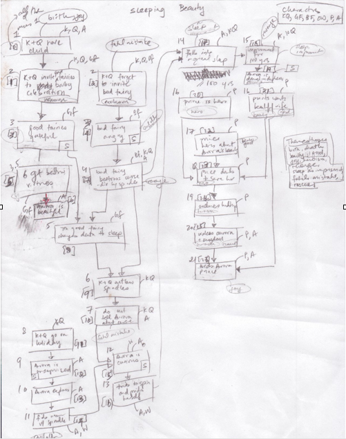

A summary of the resources and process used to make these visualizations.
libraries and resources
All visualizations and data processing are done in javascript.
data processing
-
First, human beings analyze a story, summarizing the main events, marking causal connections between events, and associating important characters, plot devices or tropes, and themes. In the case of Macbeth, the Genesis Project provided analysis of the story.
|  |
| Example of one individual's raw analysis of Sleeping Beauty |
-
Since the number of people who analyzed the stories was small, consensus on important events was reached by taking events, themes, tropes, and character sets that at least 3 out of the four coders agreed on.
-
Data is encoded in the *story name here*_data.js files.
-
All data processing and drawing methods are stored in *story name here*_methods.js files. Jquery and d3.js were the libraries used to generate all plots and interaction. Copies of all scripts are available on github.
alternative implementation libraries
Similar interactive visualizations can be generated by a variety of libraries, the best ones (ie the ones that would provide the easiest transition)